ComputerNetwork第三章
计算机网络学习心得
第三章 运输层
这章写的有点啰嗦因为我怕我理解不到位╰（‵□′）╯
关键术语
- logic communication(逻辑通信)
- segment(报文段)
- multiplexing(多路复用)
- demultiplexing(多路分解)
- wrap(回卷)
- undirectional data transfer(单向数据传输)
- bidirectional data transfer(双向数据传输，全双工数据传输)
- error detection(差错检测)
- ACK(肯定确认)、NAK(否定确认)
- retransmission(重传)
- duplicate(冗余的)
- connection-oriented(面向连接的)
- MSS(最大报文段长度，Maximum Segment Size)
运输层概述
运输层为主机上运行的进程提供逻辑通信，而其下的网络层则是在主机之间提供逻辑通信。运输层面向进程，网络层面向主机。首先还是了解一下网络层，网络层有IP协议，为主机之间提供逻辑通信。IP不确保报文段交付，不确保按序交付，所以IP也被称为不可靠服务。每台主机至少有一个网络层地址(即IP地址)。
TCP和UDP将IP的交付服务从主机间拓展到主机的进程间。这样的拓展称为多路复用和多路分解。
UDP所能提供的仅有的两种服务即数据交付和差错检查。这两种也是最低限度的运输层服务。
TCP流量可调节，UDP流量不可调节。
多路复用与多路分解
将运输层报文段中的数据交付正确的套接字的工作称为多路分解。将源主机的数据块封装上首部信息生成报文段，传递给网络层的工作称为多路复用。所以，多路分解是分发，多路复用是整合。
UDP多路复用与多路分解：
我们知道UDP是无连接的，一个UDP套接字由一个二元组来全面标识：(目的IP地址，目的端口号)。如果两个UDP报文段的源IP地址或源端口号，但是具有相同的目的IP地址和目的端口号，这两个报文段将进入同一个目的套接字。
应用程序客户端让运输层自动透明地分配端口号，而服务器则有分配特定的端口号。TCP多路复用与多路分解：
TCP面向连接，一个TCP套接字由一个四元组来全面标识：(源IP地址，源端口号，目的IP地址，目的端口号)。四元组只要有一个不相同的报文段，都将定向到不同的套接字。所以一个套接字对应一个进程。如图，客户A和客户B都与服务器C创建TCP连接，A和B中有目的端口和目的IP地址,源端口都一致的进程，但是由于源IP地址不同，这两个目的相同的进程仍然可以被服务器B多路分解。
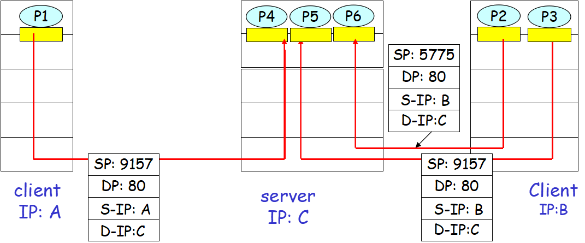
UDP
- UDP也是有优点的，总而言之就是比较轻量级：
- 对应用层发送数据控制更为精细。因为TCP有拥塞控制，但是UDP没有，发送不会被遏制。
- 不需要建立连接。省了三次握手，就节省了很多时间。这也是为什么DNS运行在UDP上，这样解析起来很快。
- 无连接状态。这种状态不需要追踪状态信息，不需要跟踪参数，所以在某些特定应用中UDP能支持更多的活跃用户。
- 分组首部开销小。TCP报文段首部有20字节，而UDP报文段首部只有8字节。
如图所示，流行因特网应用及其使用协议。
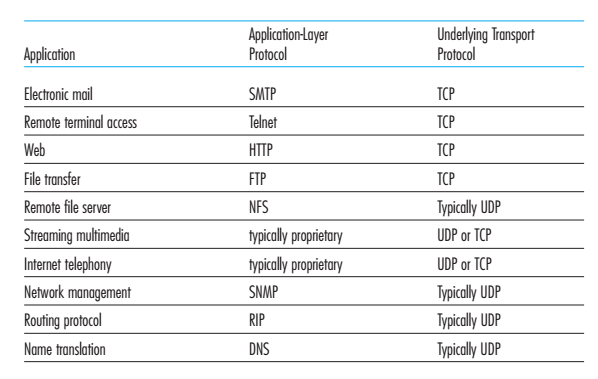
UDP报文段结构(注意区分之前的UDP套接字二元组结构)
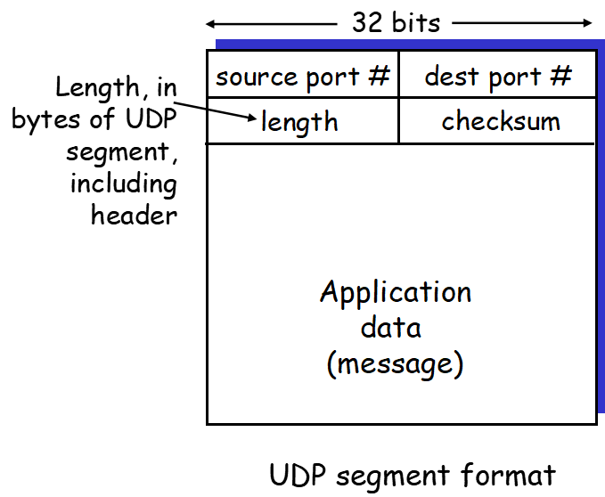UDP checksum(差错检验的方式)：发送方的UDP对所有16比特字的和进行反码运算，求和时遇到的任何溢出都将被wrapped(回卷)。(中文书第六版P135)最后所有字相加，包括检验和也相加，结果是全16位1则无差错，结果有0则有差错。
UDP其实也是可以实现可靠数据传输的。
可靠数据传输原理
在介绍TCP之前先引入可靠数据传输原理。本章使用的术语package(分组)是针对任何网络而言，在因特网中就是运输层的报文段(segment)了。
rdt1.0 经完全可靠信道的可靠数据传输
一个有限状态机FSM只有一个状态，所以收到事件时进入的下一个状态也是调用自己。
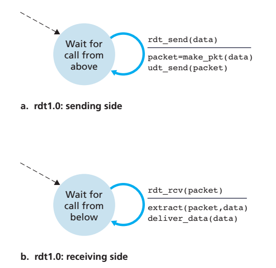rdt2.0 经具有比特差错信道的可靠数据传输
底层信道更为实际的情况时分组比特可能受损，rdt2.0假设分组比特可能受损，但是仍然有序发送并被接收。
rdt2.0采用了差错检测、肯定/否定确认、重传三种方法来支持。
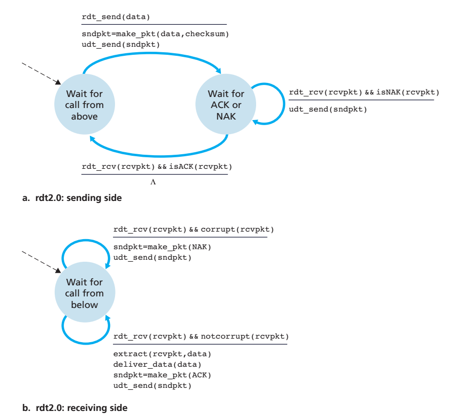
发送方的FSM有两个状态。当发送方处于等待ACK或NAK的状态，它不能从上层获得数据。这种协议被称为停等(stop-and-wait)协议(也就是发送一个package之后就一直等着收到回应)。接收方FSM也只有一个状态。看似rdt2.0可以运行，但是我们忽略了一个问题，ACK或者NAK都是可能出错的，并且，分组出错以后没有规定恢复的方式也是一个问题。
于是引入了rdt2.1，发送方的FSM有4个状态，接收方FSM有2个状态(都翻倍了)。
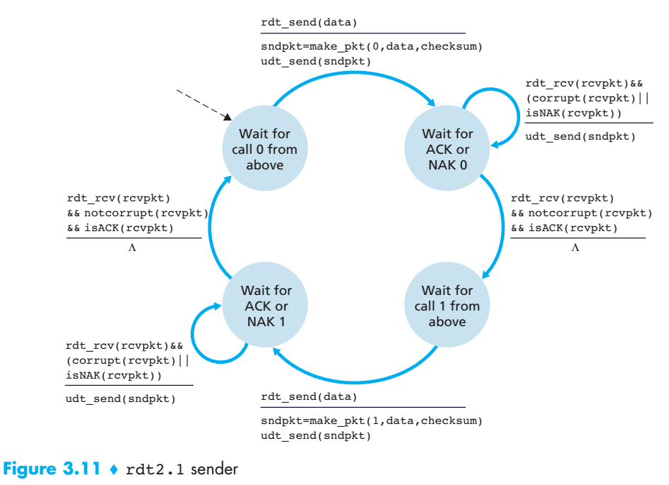
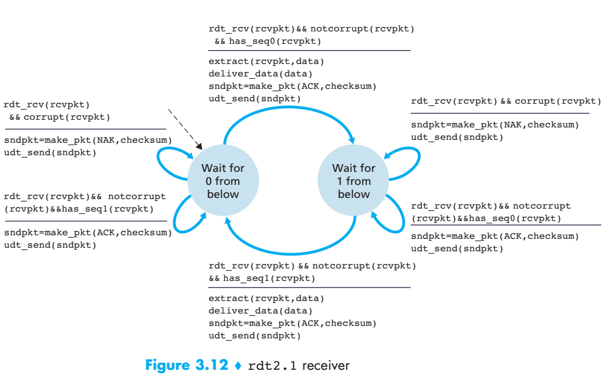
而rdt2.2使用的则是无NAK的方式。也就是说，rdt2.1用0和1来区分顺序。第一次发送方发送0分组给接收方，接收方接收到了之后返回ACK0。第二次发送方发送1分组给接收方，接收方未接收到，可以发NAK1，也可以不发。第三次发送方发送的分组将会用0标识，接收方接收到了，返回ACK0，则发送方这时候收到了两次连续的ACK0就知道第二次的1分组未发送成功了。因为rdt2假设没有丢包，所以不考虑ACK返回时候丢失的情况。
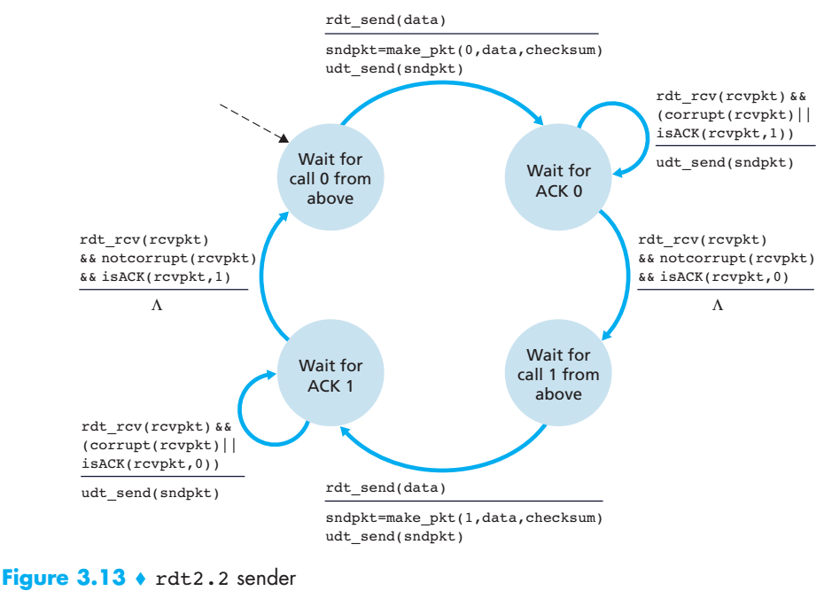
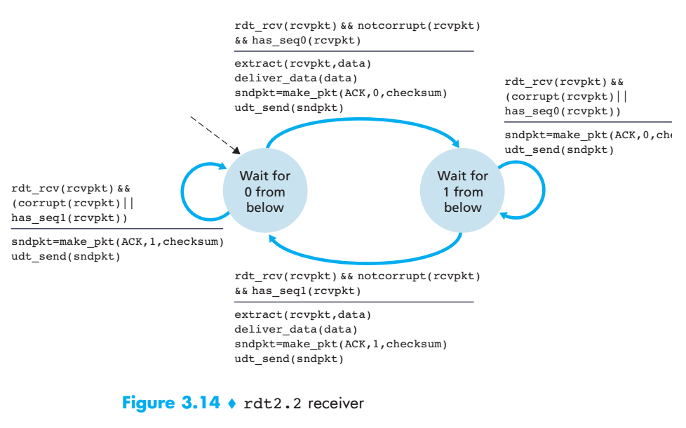rdt3.0 经具有比特差错的丢包信道的可靠数据传输
rdt3.0添加了一个timer，超时则重传。因为分组序号在0和1之间交替，所以也被称为alternating-bit protocol(比特交替协议)。rdt3.0性能瓶颈是它是一个停等协议，发送方发出一个分组只需要n秒，但是收到ACK需要m秒，n是远小于m的，在此期间发送方只能等着，什么事也做不了。所以流水线可靠数据传输协议出现了。- 流水线技术对可靠数据传输的要求
- 每个输送的分组都需要唯一的序号，所以不仅仅局限于0和1了。
- 收发两方需要能缓存多个分组
- 需要有差错恢复办法：Go-Back-N或者是Selectiv Repeat
Go-Back-N
GBN协议将整个发送分组数规定为N，所有分组序号范围分为4个部分，如图：
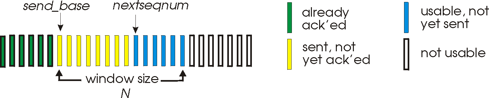- timer追踪的是最早发送但未被确认的分组，即黄色最左边
- GBN也被称为滑动窗口协议(sliding-window protocol)
- GBN发送方必须响应三种类型的事件：
- 上层的调用：得知上层调用之后，检查窗口N是否已满，满了则返回告知上层，未满则加入新的分组进窗口
- 收到一个ACK：采用累计确认，收到ACK5代表ACK0-ACK5的包都已收到了。
- 超时事件：在规定时间内没有收到已发送分组的ACK则判定该分组丢失，则重传所有已发送还未确认的分组。
- GBN接收方的动作比较简单：按序递交分组给上层。当收到第n个分组时，接收方必须保证上一个递交的分组是n-1，才可以将这个第n分组递交给上层，否则就丢弃(GBN不需要buffer，没必要缓存第n分组，因为GBN重传机制，你不发ACKn回去，对方还会再发第n分组过来)。GBN接收方同时具有一个延时确认的机制，收到第一个分组之后不急着发ACK1回去，可以等多几个分组比如2，3，4，5，直接发一个ACK5回去就行~
- GBN接收方只需要维护的信息就是下一个按序接受分组的序号(expectedseqnum)，GBN的接收方窗口大小为1。
Selective Repeat
GBN的重传机制会导致大量不必要的重传，降低了数据传输效率。SR方式的接收方不能累积确认了，得逐个确认逐个发ACK。
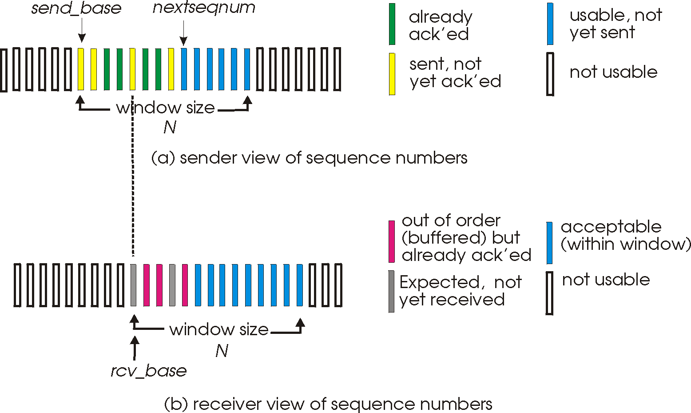- 失序分组将会被接收方缓存，知道它之前都有序为止。
- SR的发送方的事件与动作：
- 从上层接收数据：启动timer，检查下一个将要发送分组序号，如果在窗口N内，则发送。不在窗口内的就缓存或返回告知上层。
- 超时：每个分组必须有自己的逻辑定时器。
- 收到ACK：将该ACK对应分组标为已确认，如果该分组是最左边的，则N可向前滑动到最小未确认分组。
- SR的接收方的事件与动作：
- 如果收到的分组序号在当前窗口内，则发送对应ACK回去，如果该分组恰好是最左需要的分组，则将窗口向前移动到未接受分组为止，而窗口滑过的所有分组一起交付给上层。如上图，如果接收方再收到第一个灰色分组，则可将连续三个分组一起交付给上层，然后发送该灰色分组对应序号的ACK回去。
- 如果收到的分组序号在窗口左边(即以前已经收过)，则接收方需要返回ACK标识该分组以前已被确认过。
- 其他情况直接忽略该分组。
window size(N)最好不要超过seq# size的一半，否则可能让接收方无法判断是一个新的分组还是一个重传。
介绍完可靠数据传输原理，可以进入TCP协议的研究了。
面向连接的运输：TCP
TCP依赖于我们之前讨论的种种原理：差错检测，重传，累积确认，定时器，确认号和序号的首部字段。
TCP提供全双工服务，TCP也是点对点的(不存在多播)！
TCP连接的每一端都有自己的接收缓存和发送缓存，这个buffer是在三次握手初期就建立的。TCP可从缓存中取出并放入报文段的数据受限于MSS(最大报文段长度)，而MSS又是根据MTU(最大传输单元)设置的。
TCP报文段结构
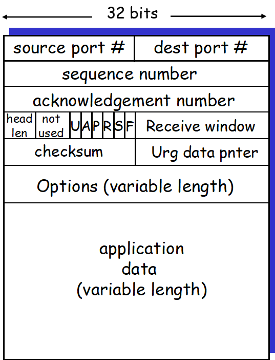- sequence number and acknowledgement number这两个序号是TCP可靠传输的关键部分，比较重要。序号是数据流的第一个字节编号。确认号将会是主机填入报文段中该主机希望接下来收到的下一个字节的序号。比如主机A收到了主机B发过来的编号为0-100的所有字节，则主机A填到报文段里的确认号将会是101。
RTT and timeout
RTT：报文段的发出到sender收到确认之间的时间(往返时间)。
估计RTT时间： EstimatedRTT = EstimatedRTT * 0.875 + SampleRTT * 0.125
RTT偏差：DevRTT = DevRTT * 0.75 + | SampleRTT - EstimatedRTT | * 0.25
设置超时时间：TimeoutInterval = EstimatedRTT + 4 * DevRTT，推荐超时时间初始值为1秒。TCP可靠数据传输
- TCP发送方响应的事件与之前提到的SR发送方相似。
- 接受上层数据
- 超时
- 收到ACK
- TCP传输一旦超时，TCP会将超时间隔翻倍，而不是再推算一遍TimeoutInterval。
- 有些时候超时周期太长了增加端到端时延，当TCP发送方收到3个duplicateACK的时候，就采取快速重传(fast retransmit)，即在定时器过期之间重传丢失的报文段。
- TCP的累积确认让TCP看起来更像是GBN风格，但是TCP也能够缓存已接收的失序报文段。但TCP也有选择确认机制，所以看起来像GBN和SR的混合体。
flow control
之前提过TCP连接两端都会有buffer，但是一旦发送方发送太快，而接收方的应用程序提取数据速率太低，就导致缓存溢出，所以流量控制是基于接收方应用程序读取数据速率和发送方发送数据速率匹配的。UDP并不提供流量控制~TCP connection management
建立connection(three-way handshake)- 客户发给服务器，SYN置为1，并随机选择client_isn序号放置于SYN报文段的序号中。
- 服务器提取出SYN报文段，给客户分配连接需要的缓存和变量，向客户发送允许连接报文段，SYN为1，client_isn+1，并加上一个server_isn序号。
- 收到服务器的SYNACK，客户也要为连接分配缓存和变量。客户向服务器发送另外一个报文段，server_isn+1，SYN置为0，该报文段还可以携带要发送的数据。
终止connection：两边都可以中断连接。A发起中断，A发送FIN置为1的报文段给B，B发回一个ACK，然后B再发一个FIN置为1的报文段给A，A发回一个ACK。总共发四次，释放双方的缓存和变量，TCP连接终止。
- principle of congestion control
拥塞可能造成两种结果:长时延和丢包，congestion control 和 flow control不一样的。
拥塞控制的方法：- end-to-end congestion control:TCP必须使用端到端拥塞控制，因为IP层不会向端系统提供有关网络拥塞的反馈信息。
- Network-assistied congestion control:由路由器向发送方提供拥塞状态的反馈信息。反馈又有两种方式：choke packet(阻塞分组)形式和路由器标志发送的分组的某个字段表示拥塞，然后由接收方向发送方通知网络拥塞。SNA, DECbit, TCP/IP ECN, ATM-ABR等都采用了这种一个比特位指示拥塞状况的方式。
TCP congestion control
因为IP层不向端系统提供显示的网络拥塞反馈(之前也提到过)，所以TCP拥塞控制必须采用端到端(end-to-end)拥塞控制。引出三个问题：- TCP发送方如何限制它向连接发送流量的速率？
- TCP发送方如何感知拥塞？
- TCP感知到拥塞的时候如何改变其发送速率(算法)？
我们将逐个解决这些问题。TCP发送方如何限制发送流量的速率，引入一个新的变量拥塞窗口(congestion window)，表示为cwnd。cwnd用于限制发送方速率，所以发送方的最大速率大概是rate = cwnd/RTT字节/秒。所以调节cwnd的值就可调节发送方发送速率。
接下来，TCP发送方如何感知拥塞呢？丢包事件定义为两种情况，要么出现timeout，要么出现发送方收到3个来自接收方的冗余ACK(duplicate ACK)。一旦发生丢包，发送方就认为网络出现了拥塞。然后TCP发送方就可以减少cwnd窗口长度来降低发送速率，减缓网络负担。TCP被称作自计时(self-clocking)的。
最后，就是TCP拥塞控制算法了，主要包括三部分。
1. 慢启动(slow start)：
初始阶段，cwnd = 1MSS，rate = MSS/RTT，每次收到ACK之后MSS就翻倍，指数级增长，拥塞窗口越来越大(当前MSS与拥塞窗口cwnd相等)。当出现**超时指示**拥塞，TCP发送方将cwnd置为1MSS，重新开始慢启动过程。
达到拥塞时，第二个变量ssthresh(慢启动阈值)设置为cwnd/2，这样就可以根据ssthresh值来预知拥塞，下一次达到ssthresh时就不再鲁莽翻倍cwnd。当达到ssthresh值时，TCP结束慢启动进入拥塞避免模式。当出现**3个冗余ACK**指示拥塞，cwnd不是归为1而是减半。还有一种结束慢启动的方式，在检测到3个冗余ACK时使用快速重传，然后进入快速恢复模式。
2. 拥塞避免(congestion-avoidance)：
TCP从慢启动进入拥塞避免情况，每收到一个ACK，则将cwnd增加一个MSS(而不是慢启动的翻番)，当出现timeout时将cwnd设置为一个MSS，当出现丢包时，ssthresh的值被更新为cwnd一半。
3. 快速恢复
慢启动和拥塞避免时TCP必须的，但快速恢复不是。
总结，TCP拥塞控制被称为加性增，乘性减，即AIMD方式。如图即可理解。
问题
- TCP和UDP的区别？